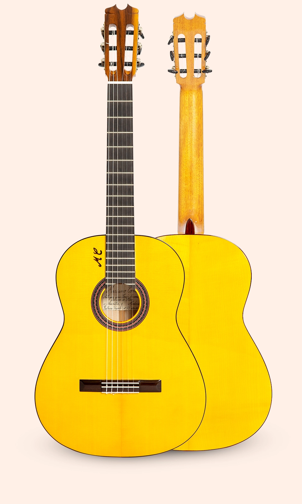
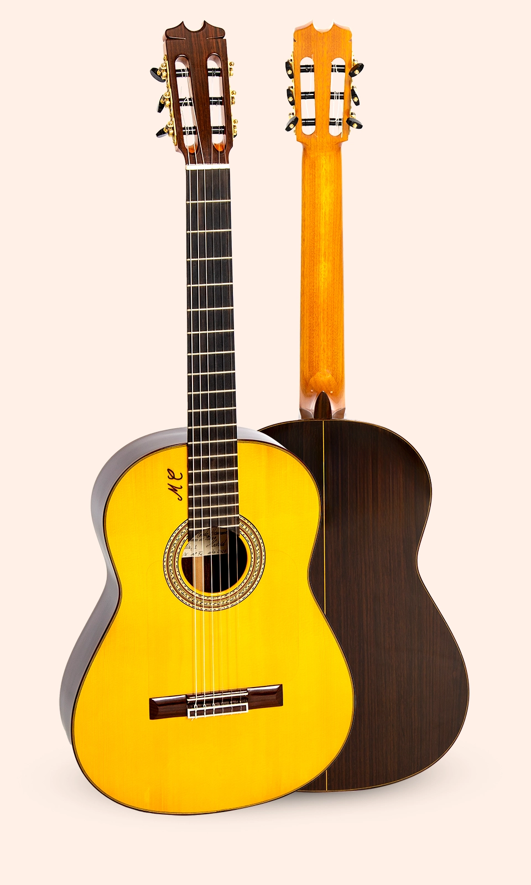
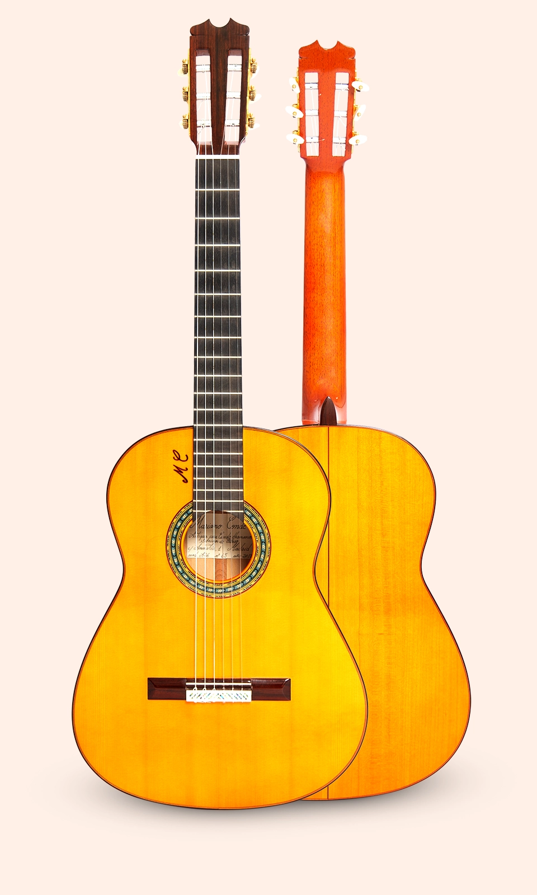
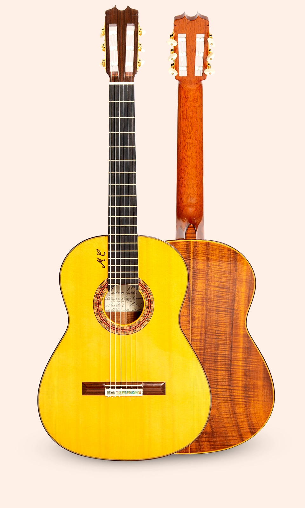
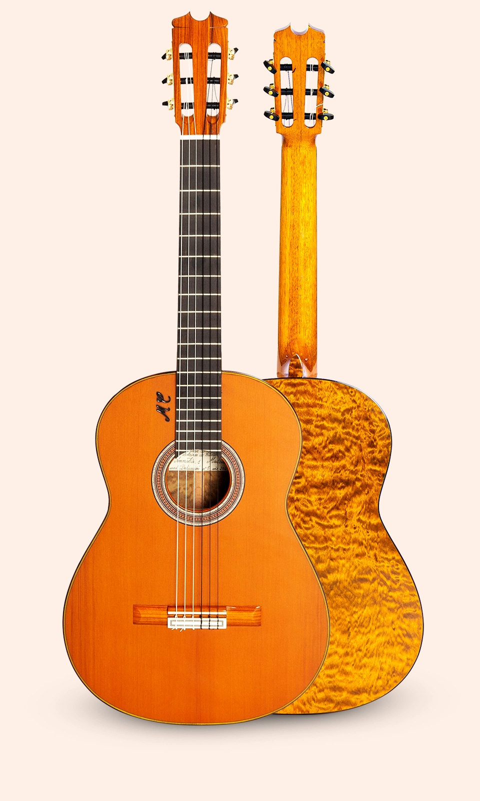

Home/ Flamenco
The compass
of the guitarflamenco
More than a century dedicated to the construction of flamenco guitars in the workshop on Amnistía street, in the middle of Madrid.
Flamenco
12 models,
a single hand.
Handcrafted, numbered consecutively, with a half-moon head and initials MC emblazoned on the lid.

Pozuelo Flamenco
Piece of its own character, with a direct attack and a projection designed for the stage.
From €4,840
Pozuelo Flamenco Mahogany
The same half-moon head with mahogany back and sides: warm tone, round response and great playing comfort.
From €4,840
Pozuelo Flamenco Palo Santo
Variant in Indian rosewood, with a dry attack and deep body, designed for concert playing.
From €4,840
Pharaon
Immediate response and a dry sound, the traditional voice of the flamenco guitar.
From €6,655
EF4/5
Balance between dynamics and body to accompany singing and dancing.
From €6,655
EF5/N
Agile touch and great harmonic richness in a completely handmade construction.
From €6,655
A28
Lightness and comfort for long practice sessions without losing identity.
From €9,075
A26
Precise time signature, clean attack and the recognizable crescent of the Conde house.
From €12,100
A27/N
Depth and sustain for those looking for a guitar with a flamenco soul.
From €9,075
AF25
Selected woods and traditional varnish for an open and clear sound.
From €12,100
AF25/R
A variant of the AF25 with a warmer color and very balanced response.
From €13,100
Flamenco Dedication
Dedication instrument, built without haste for a specific musician.
From €24,200The job
What there is
behind.
A legacy that inspires us
In Mariano Conde, we have been dedicating ourselves with passion and dedication to the construction of flamenco guitars for more than a century, keeping alive a legacy that began in 1915 and that continues to beat today in our workshop on Amnistía street, in the heart of Madrid. We are heirs of a family tradition that has marked the history of the Spanish guitar and flamenco.
First-class craftsmanship and materials
We personally select woods such as Spanish cypress, Indian rosewood, maple, sycamore, mahogany and Brazilian rosewood. For the soundboard we use German spruce or red cedar, woods that provide brightness, projection and a dynamic response ideal for the flamenco touch. The handle, usually made of cedar, and the ebony fingerboard ensure comfort and resistance.
Our emblematic models
Pozuelo Flamenco: a tribute to our family tradition, with a solid spruce top and sides and back made of maple, sycamore, mahogany or Indian rosewood. A28: benchmark for its volume, sustain and projection, with Spanish cypress and German spruce or red cedar top, and the possibility of customizing color and string pull.
Our sound and sensations
Lively, bright, with deep bass and crystal clear treble. The response is immediate and the medium touch with low action makes it easy to strum, pick and pick up. The balanced weight and perfectly measured string height allow for long playing sessions without fatigue.
International recognition
Artists such as Paco Cepero, Jesús Guerrero, Joni Jiménez, António Higuero, Ed Sheeran and Robe (Extremo Duro) have trusted in the quality and unique character of our flamenco guitars.
Personalization and exclusivity
Each guitar can be customized according to the guitarist's preferences: woods, color, string pull, mechanical or stick headstock, rosette and finish. They are all numbered and certified.